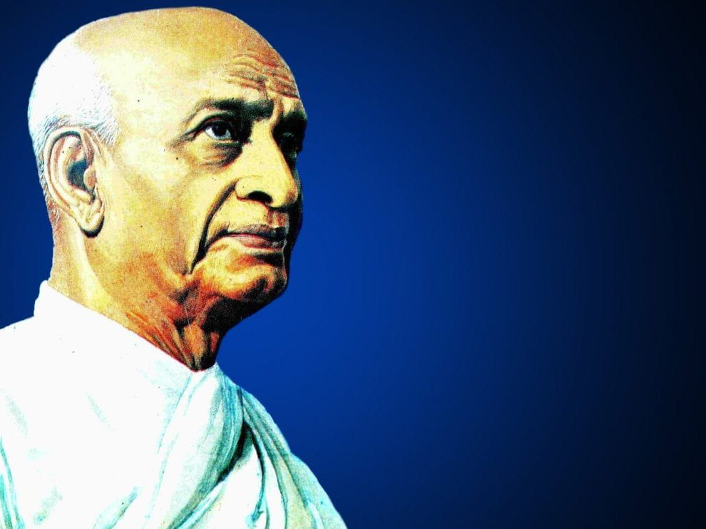
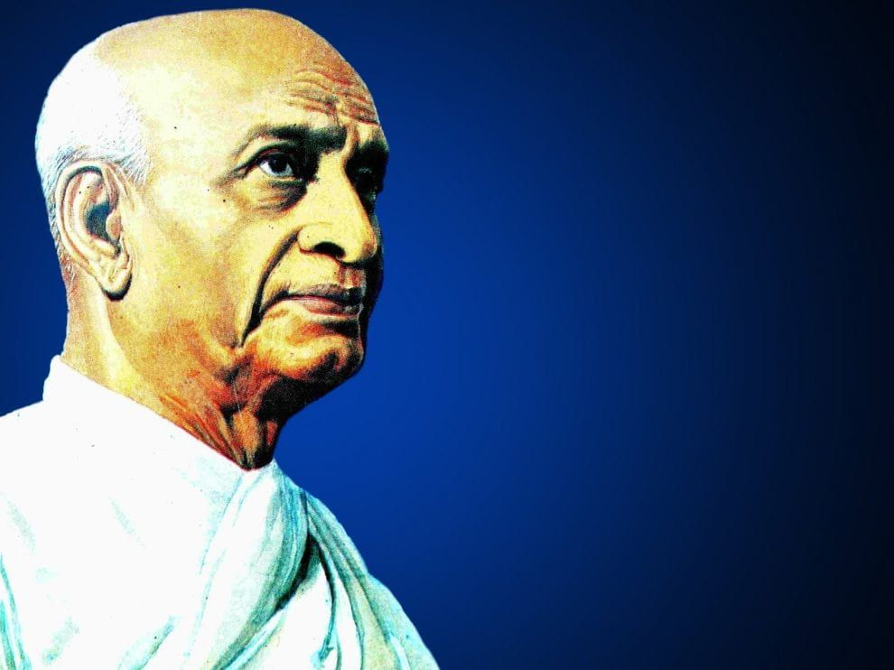

HAPPY INDEPENDENCE DAY

INDEPENDENCE DAY!
We celebrate Independence Day every year on15 August as a national holiday in India
to commemorate the independence of the nation from the United Kingdom on 15 August 1947.
This was the day on which the provisions of the Indian Independence Act of 1947 came into
effect, which transferred legislative sovereignty to the Indian Constituent Assembly.
Independence corresponded with India's partition, wherein British India had been divided
into the Dominions of India and Pakistan along religious lines.
LET's KNOW ABOUT OUR FREEDOM FIGHTER OF INDIA
CLICK ON THE PICTURES AND KNOW ABOUT ALL THE FREEDOM FIGHTERS OF INDIA
AMAR SHAEED CHANDRA SHEKAR AZAD

Chandrasekhar Azad, original name Chandrasekhar Tiwari,
Chandrasekhar also spelled Chandrashekhar or Chandra Shekhar,
(born July 23, 1906, Bhabra, India—died February 27, 1931, Allahabad),
Indian revolutionary who organized and led a ban
d of militant youth during India's independence movement.
BAL GANAG DHAR TILAK
Bal Gangadhar Tilak was born in the year 1856 on the 23rd of July
He was a Marathi by birth who hailed from the city
of Ratnagiri
Being an ordinary school teacher, his love and patriotism for the
country were beyond words
He was a keen admirer of the ruler of Maharashtra then, Chhatrapati Shivaji
He is known as the father of Indian unrest and introduced the concept of Swaraj to the people of India
While he fought the British, he was once
arrested and sent to prison in Burma for 6 years
His sacrifices and social service to the nation will be remembered for years to come
Being a great scholar of Indian history, he could understand the vibe and the
dynamics of Indian society better than other leaders of the Indian independence Movement
BHAGAT SING

Bhagat Singh was a prominent freedom fighter in the Independence movement.
He was born on September 28, 1907, in Punjab, India, to a Sikh family.
Bhagat Singh’s dad and uncle were freedom fighters, which inspired him to join the movement.
He devoted his life to the Independence movement at the age of thirteen.
He was commonly called Shaheed-e-Azam Bhagat Singh among his comrades.
Bhagat Singh was a national symbol of patriotism and made significant contributions to get freedom from British rule.
He wrote articles for the Kirti Kisan Party’s magazine occasionally.
SARDAR VALLABAHI PATEL
 

Full name of 'Sardar Vallabhbhai Patel' was Sardar Vallabhbhai Jhaverbhai Patel. He was born on 31
October 1875 in Nadiad, Gujarat, India. His father's name
was Jhaverbhai Patel, who was a simple farmer. His mother's name was Laad Bai, who was a simple lady.
SUBHASH CHANDRA BOSE


Subhash Chandra Bose, popularly known as Netaji, was a great militant, freedom fighter and a patriot.
He was born in Cuttack, Orissa on 23rd January 1897 to Janakinath
Bose and Prabhavati Devi. His father Janakinath Bose was a well-known lawyer of his time.
LALA RAJPAT RAI

Lala Lajpat Rai ‘The Punjab Kesari’ or ‘The Lion of Punjab’ was a
great fighter for freedom. Though he was not born great but he achieved greatness by dint of patriotism.
He started his career as a lawyer. He joined the freedom movement after giving up his practice under the influence of Gandhiji.
MANGAL PANDEY

Mangal Pandey was a revolutionary freedom fighter of Indian independence. He was the
beginner of the revolt of 1857 independence struggle. The struggle which Mangal Pandey started is also
known as ‘sepoy mutiny’ or ‘Indian mutiny’. Later on, when he was hanged till death, the effect of this
mutiny spread into whole India resulting in a small exchange
of battle or big wars that troubled the Britishers, it was Mangal Pandey who awoke this feeling.
SLUTE ALL THE FREEDOM FIHTERS AND SOILDERS TO FOUGHT FOR OUR INDIA
JAI HIND!